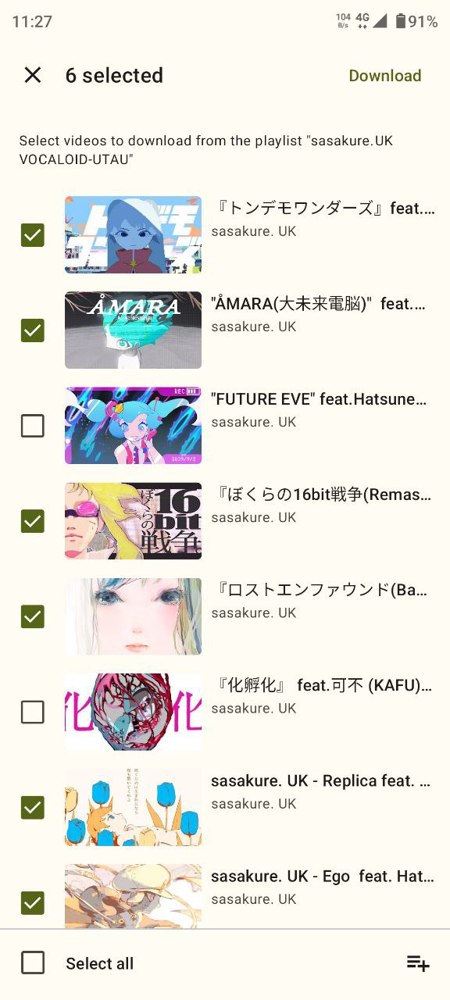

Seal 海豹下载器深度盘点：开源安卓离线保存的能力面全景
以资深用户视角系统性梳理 Seal 海豹下载器的核心下载链路、历史管理、生态贡献等能力域，客观指出版本迭代节奏与个人开发者维护的局限，帮你判断它值不值得成为手机上的常驻工具。
如果把 yt-dlp 比作开源下载界的瑞士军刀，那 Seal 就是给这把军刀套上了一层手感极好的手机壳。它不是从零造了一辆新车，官网主页上直接就把 yt-dlp 作为核心依赖列出来了，而是把命令行工具那套复杂参数翻译成了 Material You 风格的三步点击操作——粘贴链接、选清晰度、开始下载。这件事说起来简单，做起来却需要同时搞定内核组件调度、界面设计、站点解析的速度和稳定性。Seal 做到了，而且因为完全开源无广告无订阅，在 F-Droid 社区拿到了 Excellent 5.0 分。想要上手直接下载就行，apk 装完就能用。今天这篇盘点不想做竞品对比，只想把它到底能做什么、在哪些场景特别好用、又有哪些地方让你不得不迁就，完整铺开。
核心下载链路：从一条分享链接到本地文件的完整自动化
Seal 最核心的能力就是那条从链接到文件的流水线。你把任何一个 yt-dlp 支持的视频站链接粘进去，它会依次完成五件事：解析页面结构拿到视频信息、把视频流音频流字幕封面分开展示让你选、内嵌 aria2c 多线程抓取、视频音频自动合并成完整文件、按音频视频分类归档到应用内记录。这条链路的亮点在于拆流展示——很多同类下载器要么只给你一个默认最高清晰度，要么把视频音频合好才让你选。Seal 把所有轨道单独列出来，你可以选 1080p 视频配 320kbps 音频，也可以只要音频做本地收藏。对于经常需要离线保存课程、讲座、音乐 MV 的人来说，这种粒度的选择权就是实用性的分水岭。

底层靠的是三个内核组件的协作：yt-dlp 负责解析链接和视频信息，aria2c 替代 yt-dlp 默认的单连接抓取做多线程加速，mutagen 把封面、专辑信息、艺术家等元数据写进音频文件。这种架构的好处是每个组件都能独立更新——yt-dlp 本身就维护着一张覆盖数千个视频站的解析规则表，Seal 跟着更新就能跟上各站点的反爬变化，不需要自己写每个站点的解析逻辑。
历史管理：从滚动浏览到关键词搜索的体验升级
下载器用久了，历史记录会积累到几百上千条。Seal 在 v1.12.0 之前只能滚动浏览，v1.12.0 起加了两个搜索能力，seal文档里对这个版本的更新点有完整的功能清单：下载记录页面支持按视频标题、上传者频道名、甚至日期关键词搜索，格式选择页的字幕选择对话框也能按语言名称或代码快速过滤。这两个功能放在一起看，解决的是"找回"和"精确选择"两个高频痛点。
历史搜索还有个隐藏配合——搜索到一条已下载的视频后，如果发现原始文件被删了或者需要重新获取最新字幕，Seal 会用历史记录里保存的链接重新发起解析和下载，不用你再手动复制粘贴一次。加上完整的历史导出与备份能力，换机迁移不丢账，Seal 在历史管理这一块的完整度在同类应用里属于靠前的梯队。

生态与贡献：非开发者也能参与的开源项目
很多开源工具的社区贡献只对开发者开放，Seal 不一样。它的翻译工作走的是 Hosted Weblate 在线协作平台，不需要写代码，纯浏览器界面操作。注册账号、选语言、挑未翻译的字符串提交，维护者会定期审核合入仓库，下次 Release 自动打包进应用。目前 Seal 已经覆盖了 15 种以上语言，包括简体中文、繁体中文、英文、阿拉伯、俄语、日语、葡萄牙语等。
除了翻译，非开发者还能在 GitHub Issue Tracker 里帮忙分类和确认其他人的 Bug Report，在 Matrix 社区空间里帮新用户答疑，或者在自己的社交内容里提一下这个项目。Seal 官方维护着两个沟通渠道：Telegram 频道做单向公告，Matrix 空间做双向讨论。这种分层的社区设计让不同需求的用户都有地方去——想第一时间收到版本更新看 Telegram，遇到问题需要实时讨论上 Matrix，想动手帮项目推进去 Weblate 翻几句。
短板也要说：安卓独占与个人开发者维护的天然局限
盘点不能只说好处。Seal 的第一个硬限制是安卓独占——iOS 用户、桌面端用户都无缘使用，尽管 yt-dlp 本身是跨平台的，但 Seal 的界面只做了安卓 Material You。如果你在 iPad 上想离线保存视频，Seal 解决不了。
第二个局限来自维护模式：Seal 是个人开发者 JunkFood02 维护的项目，不是公司团队。这意味着版本迭代节奏完全取决于开发者的个人时间和精力——遇到复杂 Bug 可能需要等几天甚至几周才能定位修复，功能建议的优先级也要看维护者的判断。好消息是它永远免费开源，没有订阅压力；坏消息是它的存续和质量高度绑定在一个人的状态上。
第三个局限是依赖 yt-dlp 的更新速度。虽然 Seal 的架构让它能跟着 yt-dlp 更新解析规则，但如果某个视频站突然改了反爬机制，yt-dlp 的修复可能需要时间，这段时间里 Seal 对这个站点的下载就会失败。这不是 Seal 自身的问题，而是所有基于通用解析器的下载器共同面对的风险。
什么样的人该用它
如果你对号入座以下两三类，Seal 值得装一个。
第一类：有离线保存需求的重度视频观众。 不管是想把 B 站教程存平板慢慢看，还是把 YouTube 频道的老视频归档到手机，Seal 那条完整的拆流下载链路都能覆盖。多线程 aria2c 比单连接抓取快不少，视频音频自动合并省了手动拼接的麻烦。
第二类：已经在用 yt-dlp 但想要手机端的进阶玩家。 你在电脑上可能已经有一套 yt-dlp 的命令参数了，Seal 让你在外出时也能继续用手机批量下载自己常用的那些站点。它不是替代品，是手机端的延伸。
第三类：在意开源和无广告的用户。 F-Droid 5.0 分不是白拿的。没有广告、没有订阅、没有偷偷收集数据，Seal 的行为完全透明。如果你对商业下载器里穿插的广告和弹窗忍无可忍，Seal 会让你觉得"原来下载还可以这么干净"。
对不上这三类的人可能不需要它——偶尔在浏览器里点个下载、或者只想存一些固定站点的内容，系统自带的下载管理器或者站点本身的离线功能就够用了。Seal 的能力面是为高频、通用、可控的离线保存场景设计的，这也是它和那些只做某一个视频站的定制版下载器最本质的区别。目前关于 Seal 的完整资料在三个仓库都能获取，国内访问可以优先去 Gitee 或 GitCode，国外用户直接看 GitHub 就行。